Your own LoRA
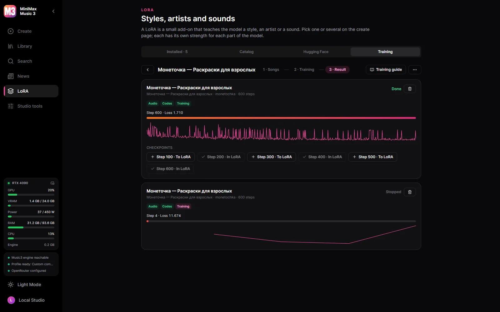
Songs of one artist or style become a LoRA on your card, with HOT-Step’s trainer and recipe.
A Windows desktop studio for MiniMax Music3.
Windows 10/11 x64 and an NVIDIA card, from the GTX 900 series on. The model files are downloaded from inside the studio, when you decide to — nothing downloads on its own.
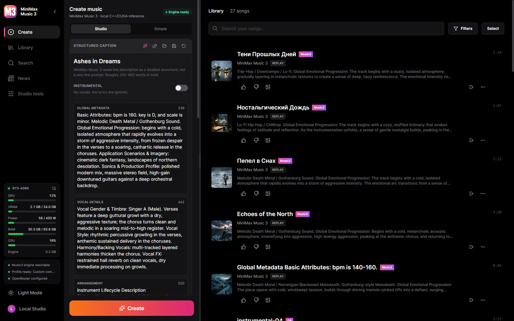

Songs of one artist or style become a LoRA on your card, with HOT-Step’s trainer and recipe.
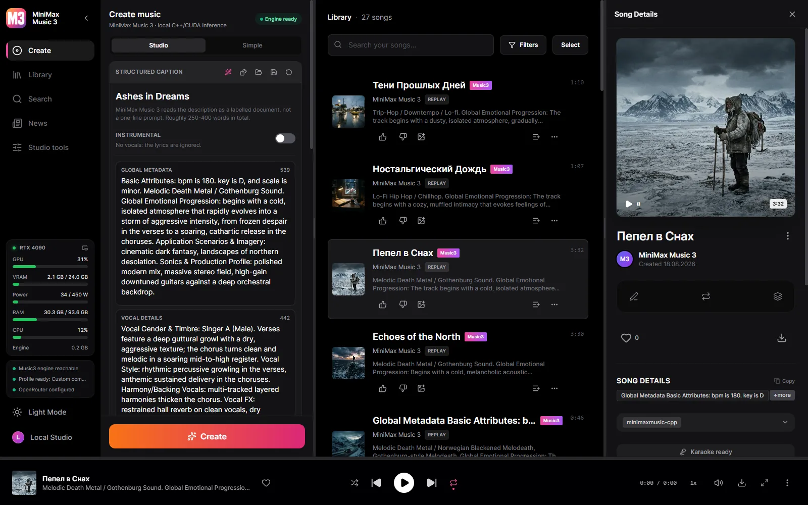
Enhanced LRC with per-word timings, aligned by Parakeet, Whisper or a cloud model — your lyrics, only the timing is borrowed.
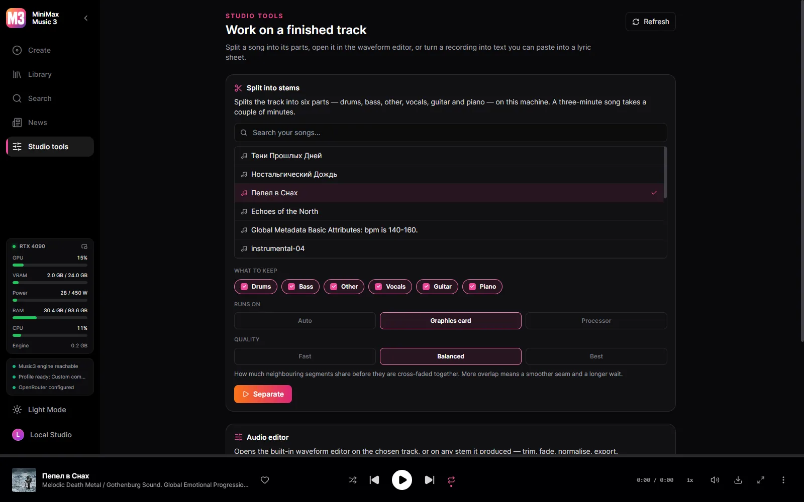
Six tracks - drums, bass, other, vocals, guitar, piano - separated by HT-Demucs on the card, or on the processor when you prefer.
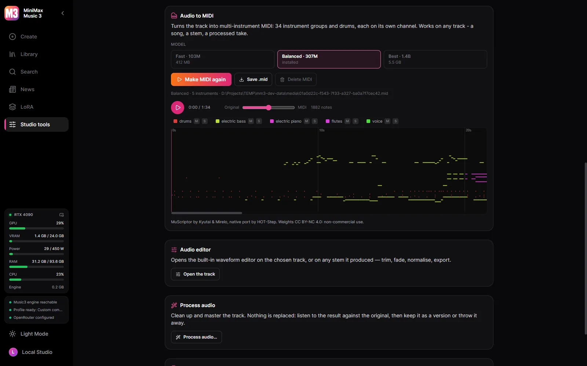
A song, a stem or a processed take becomes multi-instrument MIDI - 34 instrument groups and drums - with MuScriptor on your GPU.
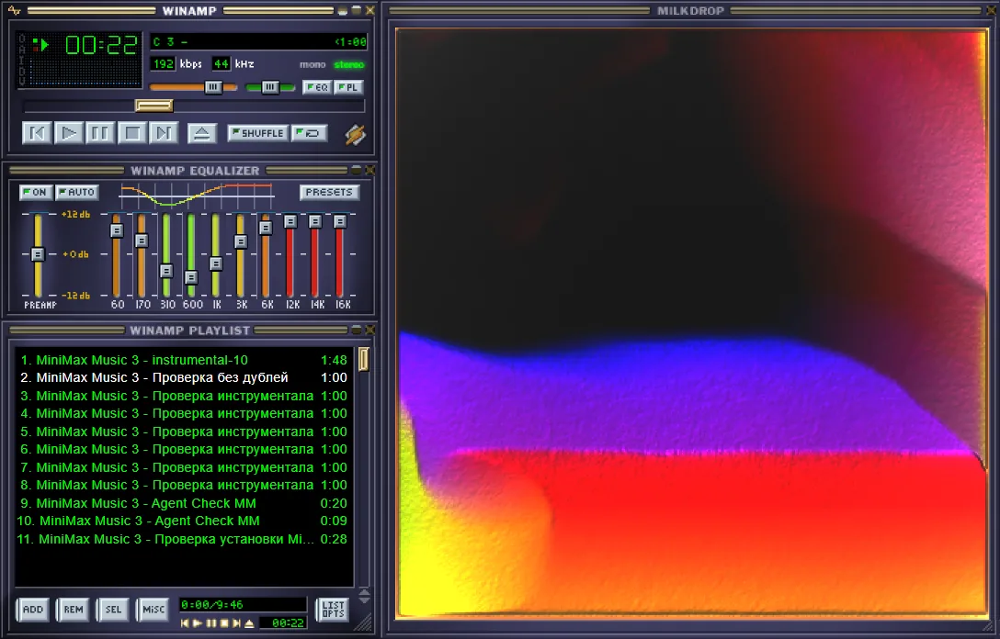
A ten-band equalizer on Winamp's frequencies with its presets and .EQF files; MilkDrop with hundreds of presets or a spectrum in ten looks; and a Winamp mode whose windows move apart, dock and resize, in the original skin or any from the Winamp Skin Museum.
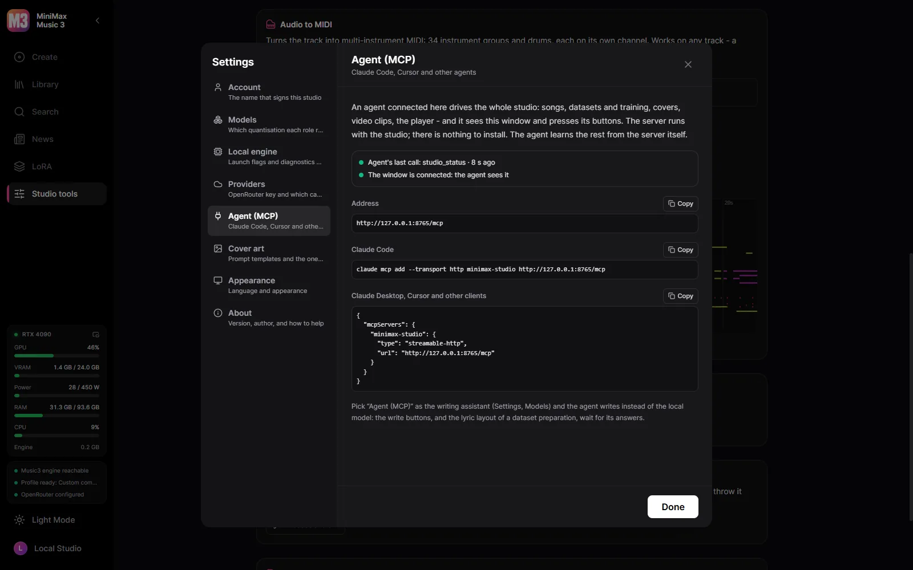
Connect Claude Code, Claude Desktop or Cursor and the agent does everything the studio does: writes and makes songs, fills a dataset and trains, draws covers, cuts clips in the video editor, plays songs - and sees the window and presses its buttons.
The studio itself, in your language.
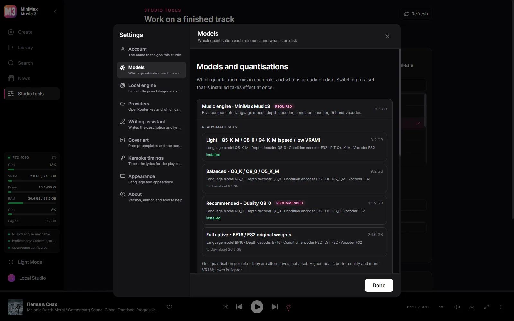
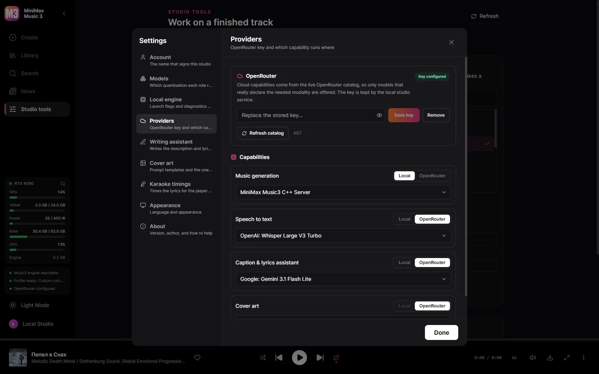
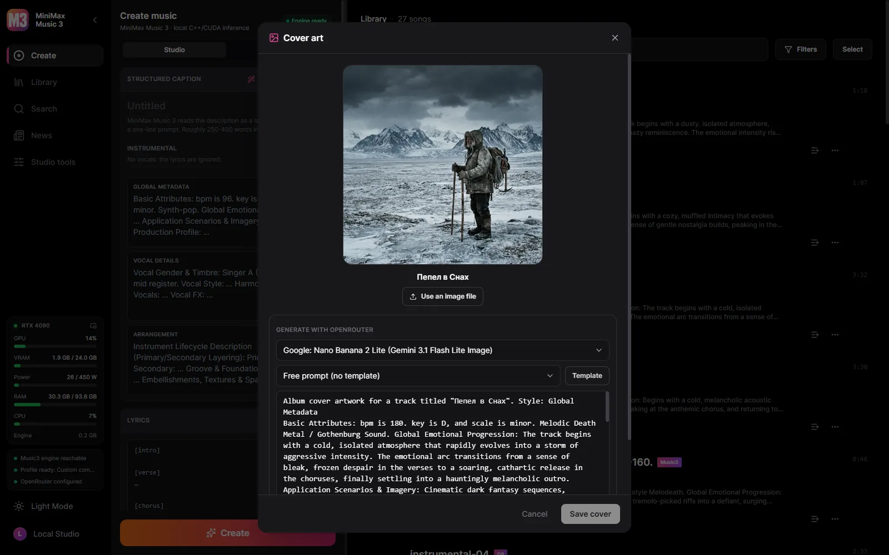
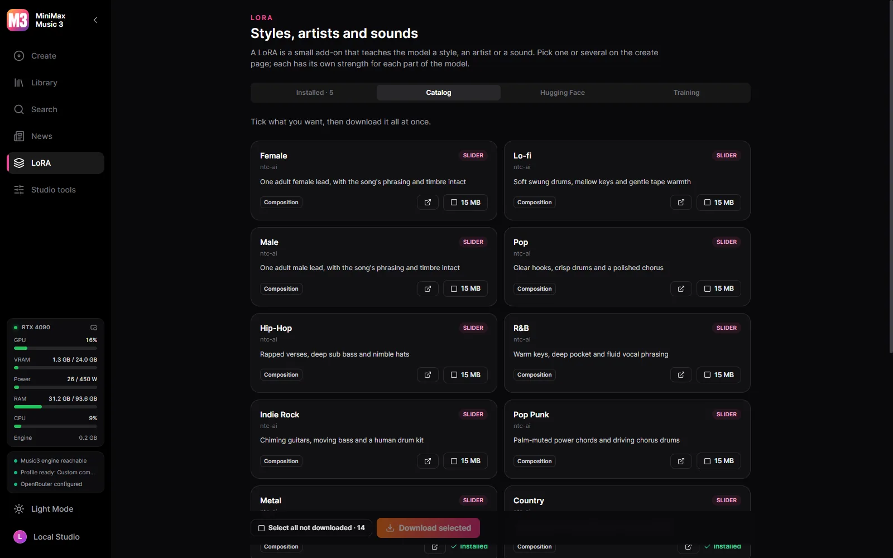
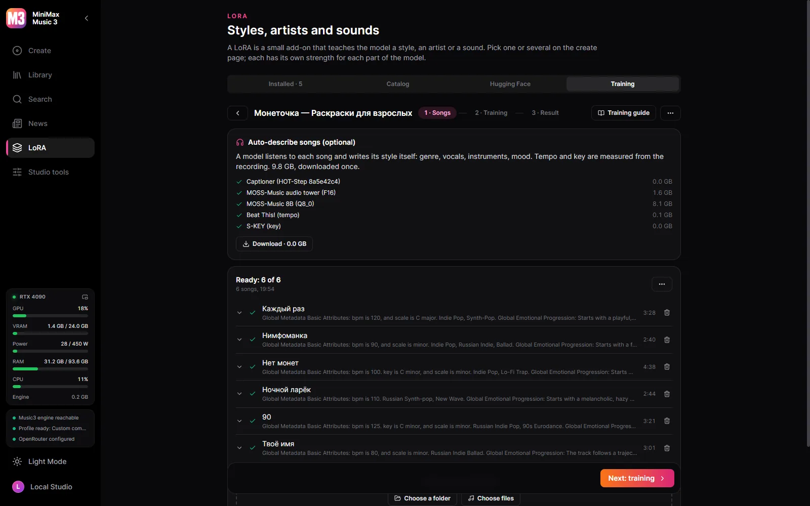
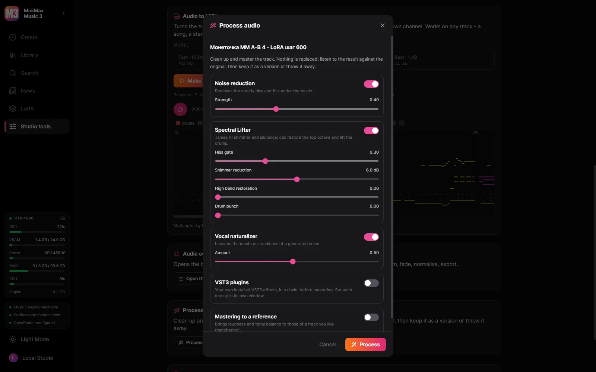
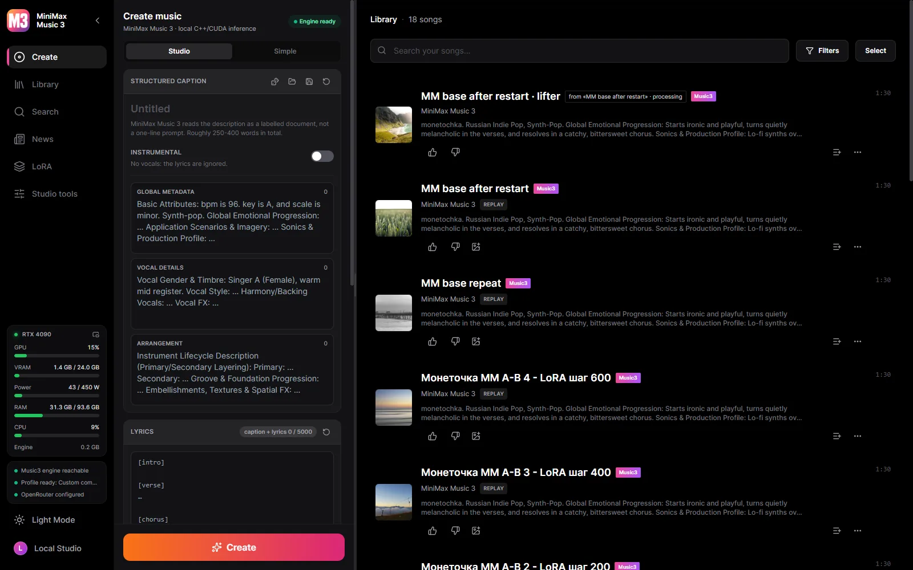
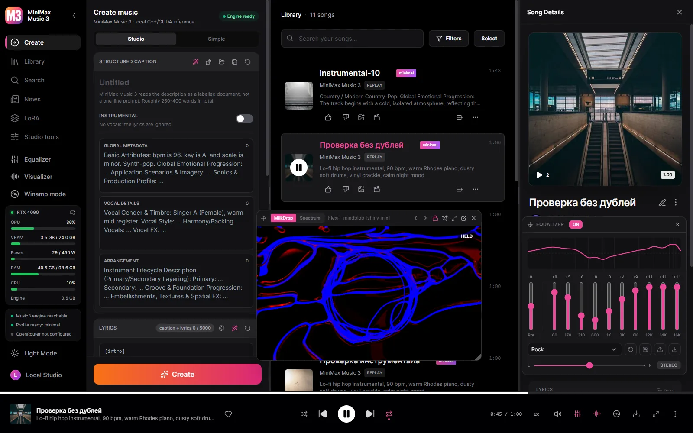
Windows 10/11 x64 and an NVIDIA card, from the GTX 900 series on. The model files are downloaded from inside the studio, when you decide to — nothing downloads on its own.
A runnable Music3 installation is always five components: language model, RVQ depth decoder, condition encoder, DiT and vocoder.
| Your GPU | Profile | Download |
|---|---|---|
| 30 GB+ | Full Native — BF16 / BF16 / F32 | 28.6 GB |
| 15 GB+ | Q8 Quality | 12.8 GB |
| 11.5 GB+ | Balanced — Q6 / Q8 / Q5 | 9.8 GB |
| 9.5 GB+ | Light — for speed and low VRAM | 7.7 GB |
| 8 GB | Minimal — Q3, for 8 GB cards | 6.5 GB |
The studio detects your card and preselects the profile it can actually run, but the download is always your decision. Every file is checksum-verified against a pinned Hugging Face revision, and an interrupted download resumes where it stopped.
Yes. The studio is free and open source, and the models download for free from inside it.
The short version: your music is yours, and it stays on your disk.
The studio is open source. MiniMax Music3 weights are governed by their own community license — commercial use must display the MiniMax-Music3 name and implement the safeguards that license requires.
Songs of one artist or style become a LoRA on your card, with HOT-Step’s trainer and recipe. Every setting is editable, and datasets move between this studio and YuE2 Studio.
Connect Claude Code, Claude Desktop or Cursor and the agent does everything the studio does: writes and makes songs, fills a dataset and trains, draws covers, cuts clips in the video editor, plays songs - and sees the window and presses its buttons. MiniMax’s own caption rules come with it, so the agent writes the captions and lyrics itself. Pick it as the writing assistant and it writes instead of the local model.
Local by default. A cloud key is added by you, for the capability you choose, and can be taken away again.
| Part | Runs | Size |
|---|---|---|
| MiniMax Music3 engine (minimaxmusic.cpp) | Your GPU, CUDA | bundled |
| Music3 model set - five components | Your GPU | 6.5-28.6 GB |
| Karaoke timings - Parakeet or Whisper | Your machine | optional download |
| Stem separation - HT-Demucs, six stems | Your GPU or CPU | 136 MB |
| Writing assistant | Local GGUF or OpenRouter | your choice |
| Cover art | OpenRouter image model | cloud only |
| Video export - ffmpeg | Your machine | bundled |
| LoRA trainer — HOT-Step ace-train | NVIDIA RTX 30 or newer, 22 GB of VRAM | 10.5 GB, optional |
| Describing songs by ear — MOSS-Music-8B | about 12 GB of VRAM | 10 GB, optional |
| VST3 host — HOT-Step | Your machine, a process of its own | bundled |
| Audio to MIDI — MuScriptor (HOT-Step ace-midi) | NVIDIA GTX 16 / RTX 20 or newer | 0.5–5.6 GB, optional |
The service is compiled into the desktop binary and supervises the C++ engine. When the application closes, everything it started closes with it.
React UI ─┐
├─ MiniMax Music3 Studio.exe (window + native service)
Rust axum ┘ │
└─ minimaxmusic.cpp `mm-server` (C++/CUDA, GGUF)